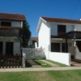
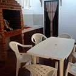
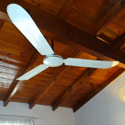
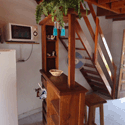
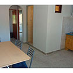
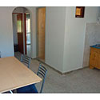

Elegi los "Complejos Vacacionales la Comarca"
Están ubicados en la zona céntrica de "LAS TONINAS" a tres cuadras del mar y dos de la peatonal, también a una cuadra del anfiteatro central.
Estamos en una de las mejores bajadas de playa, que cuenta con bajada náutica y un parador en la playa con música y actividades playeras permanentes, gym, entretenimientos múltiples.
Sus playas son cómodas y espaciosas, contando permanentemente con guardavidas.
Este es un emprendimiento familiar que, como cada año, tiene como objetivo, brindales a nuestros huéspedes una mejor estadía , por eso somos muy respetuosos con nuestros clientes y pedimos que también ellos lo sean para con los demás, como todos vienen a descansar en familia, no aceptamos ni mascotas, ni adolescentes solos, de esta manera cada ocupante de nuestro complejo regresa realmente conforme y descansado de sus vacaciones
Si recomienda a un amigo, como agradecimiento, le regalaremos la estadía de un fin de semana en el año (fuera de temporada alta)
Gracias por elegirnos y confiar en nosotros !!!
Su consulta no molesta!!!


Los duplex son para 6, 7, 8 personas, totalmente equipados:
* 2 TV con cable Y DVD
* Microondas
* Ventiladores en todos sus ambientes
* Acolchados en todas sus camas
* Excelentes y amplios placares en cada habitación
* Todos sus ambientes son externos ,muy luminosos y ventilados
* Baños completos.
* Quinchos con parrilla y mesa para comer afuera, preparados con entradas para guardar el cuatriclico o moto de agua!!
* Piletas de lavado en los patios y tender para la ropa
* Excelente presión de agua caliente
* Rejas en todas sus aberturas
* Instalaciones eléctricas nuevas con sus correspondientes sistemas de seguridad (disyuntores y llaves térmicas) esenciales sobretodo para niños
* Matafuegos
* Espacio guarda-coche individual
Ir a Ver duplex

 
Consultá sobre los departamentos:
jfp2605@outlook.com
Cel.:(011) 15.5690.9484 | (011) 11.4526.6280